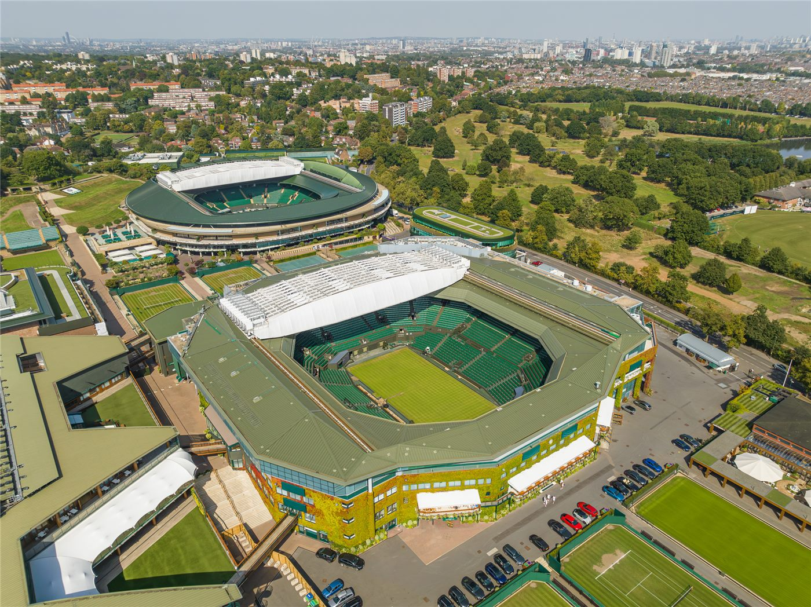

해리 왕자 가족 영국 방문… 버킹엄궁 "두 사람은 여전히 왕실 상근직 아니다"
해리 왕자와 그 가족이 영국을 방문한 가운데 버킹엄궁이 두 사람의 지위에 변화가 없다는 입장을 재확인했다. 왕실 공무를 수행하는 구성원이 아니라는 기존 설명이 그대로 유지됐다.
형덕창 기자 · 2026.09.10
橋국제

해리 왕자와 그 가족이 영국을 방문했다고 대만 매체가 전했다. 버킹엄궁은 해리 왕자 부부가 여전히 왕실의 상근 구성원이 아니라는 점을 거듭 밝혔다.
광고 문의 · 300×250해리 왕자 부부는 2020년 왕실 공무에서 물러난 뒤 미국에 거주해 왔다. 이후 영국 방문은 자선 행사나 가족 일정에 한정돼 왔다.
궁의 입장 표명은 방문 자체가 지위 변화로 해석되는 것을 차단하려는 성격으로 읽힌다. 영국 왕실은 공무 수행 구성원의 범위를 문서로 관리한다.
왕실 상근직 여부는 경호와 재정, 공식 행사 참석 자격과 직접 연결된다. 이 때문에 형식적인 문구로 보이는 표현이 실무적으로는 상당한 차이를 만든다.
영국 언론은 이번 방문 일정과 왕실 구성원과의 만남 여부에 관심을 보이고 있다. 다만 궁은 사적 일정에 대해서는 확인하지 않는 것이 관례다.
왕실 관련 보도는 관광과 출판, 방송 산업과도 연결돼 있어 상업적 관심이 겹친다. 사실관계와 추정을 구분해 읽을 필요가 있다는 지적이 나온다.
출처·참고 (사실 확인용 — 본문은 직접 재작성)
· https://news.ltn.com.tw/news/world/breakingnews/5566350
· https://news.ltn.com.tw/news/world/breakingnews/5566350